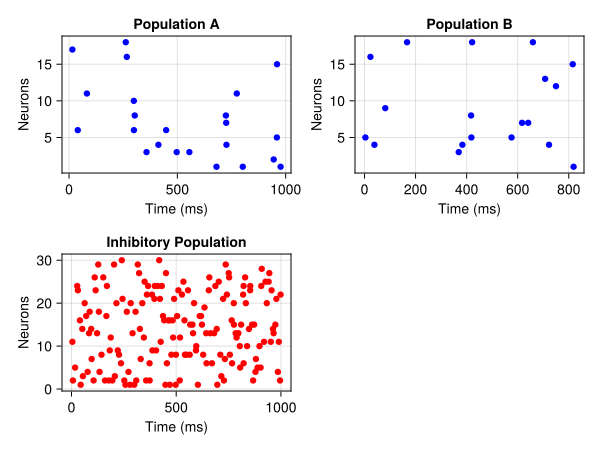
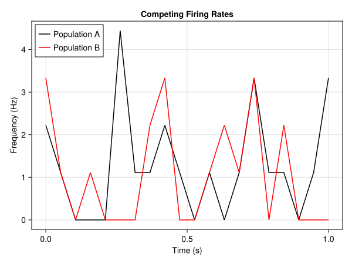

Decision Making in a Circuit Model
Jupyter Notebook: Please work on
decision_making.ipynb.
<iframe width="560" height="315" src="https://www.youtube.com/embed/ULAe2VvQgms?si=7hrxvef1jOqCEW3L" title="YouTube video player" frameborder="0" allow="accelerometer; autoplay; clipboard-write; encrypted-media; gyroscope; picture-in-picture; web-share" referrerpolicy="strict-origin-when-cross-origin" allowfullscreen></iframe>Introduction
The session covers the classic article by Wang [1] which presented a circuit model for decision making. The model consists of two selective excitatory populations, one for each possible choice, a non-selective excitatory population and an inhibitory population which facilitates the competition between the two selective ones. Each population is comprised of Leaky Integrate-and-Fire neurons, which include dynamics for NMDA, AMPA and GABA receptors, unlike the two-dimensional LIFNeuron we used before.
The decision-making task that the circuit solves is the Random Dot Motion task. The participant (our circuit model) needs to decide whether a pool of dots on a screen move towards the left or the right direction on average. The coherence of the between-dot direction of movement can vary from trial to trial, thus making some trials more ambiguous than others.
Learning goals
- Use circuit models in a behavioral task with stimulus inputs and action outputs.
- Model synaptic receptors explicitly and interventions on them.
Model Definition
using Neuroblox
using OrdinaryDiffEqLowOrderRK
using Distributions
using CairoMakie
using Random
Random.seed!(1)
model_name = :g
tspan = (0, 1000) ## Simulation time span [ms]
spike_rate = 2.4 ## spikes / ms
N = 150 ## total number of neurons
f = 0.15 ## ratio of selective excitatory to non-selective excitatory neurons
f_inh = 0.2 ## ratio of inhibitory neurons to all neurons
N_E = Int(N * (1 - f_inh))
N_I = Int(ceil(N * f_inh)) ## total number of inhibitory neurons
N_E_selective = Int(ceil(f * N_E)) ## number of selective excitatory neurons
N_E_nonselective = N_E - 2 * N_E_selective ## number of non-selective excitatory neurons
# We use two distinct weight values as per Wang [1]
w₊ = 1.7
w₋ = 1 - f * (w₊ - 1) / (1 - f)0.8764705882352941We use scaling factors for conductance parameters so that our abbreviated model can exhibit the same competition behavior between the two selective excitatory populations as the larger model in Wang [1] does.
exci_scaling_factor = 1600 / N_E
inh_scaling_factor = 400 / N_I
coherence = 0 # random dot motion coherence [%]
dt_spike_rate = 50 # update interval for the stimulus spike rate [ms]
μ_0 = 40e-3 # mean stimulus spike rate [spikes / ms]
ρ_A = ρ_B = μ_0 / 100
μ_A = μ_0 + ρ_A * coherence
μ_B = μ_0 - ρ_B * coherence
σ = 4e-3 # standard deviation of stimulus spike rate [spikes / ms]
spike_rate_A = (distribution=Normal(μ_A, σ), dt=dt_spike_rate) # spike rate distribution for selective population A
spike_rate_B = (distribution=Normal(μ_B, σ), dt=dt_spike_rate) # spike rate distribution for selective population B
@named background_input = PoissonSpikeTrain(spike_rate, tspan; namespace = model_name); ## background input
@named stim_A = PoissonSpikeTrain(spike_rate_A, tspan; namespace = model_name); ## stimulation inputs to selective population A
@named stim_B = PoissonSpikeTrain(spike_rate_B, tspan; namespace = model_name); ## stimulation inputs to selective population B
@named n_A = LIFExciCircuit(; namespace = model_name, N_neurons = N_E_selective, weight = w₊, exci_scaling_factor, inh_scaling_factor);
@named n_B = LIFExciCircuit(; namespace = model_name, N_neurons = N_E_selective, weight = w₊, exci_scaling_factor, inh_scaling_factor) ;
@named n_ns = LIFExciCircuit(; namespace = model_name, N_neurons = N_E_nonselective, weight = 1.0, exci_scaling_factor, inh_scaling_factor);
@named n_inh = LIFInhCircuit(; namespace = model_name, N_neurons = N_I, weight = 1.0, exci_scaling_factor, inh_scaling_factor);As we can see, each selective population n_A and n_B receives a separate spike train input stim_A and stim_B respectively. These inputs model visual processing that is selective for the left and right dot directions. All Bloxs also receive background inputs of the same rate from neurons we do not explicitly model. The Bloxs we use here are subtypes of CompositeBlox and contain either LIFExciNeurons or LIFInhNeurons in them.
System Construction & Simulation
We construct the graph with all connections and weights according to [1]. Please note that the system_from_graph call and the subsequent ODEProblem construction will take some minutes (probably 4-5, depending on your machine) as the system size is larger compared to other examples. The graphdynamics=true flag that we set in system_from_graph though will greatly enhance performance here.
g = MetaDiGraph()
add_edge!(g, background_input => n_A; weight = 1);
add_edge!(g, background_input => n_B; weight = 1);
add_edge!(g, background_input => n_ns; weight = 1);
add_edge!(g, background_input => n_inh; weight = 1);
add_edge!(g, stim_A => n_A; weight = 1);
add_edge!(g, stim_B => n_B; weight = 1);
add_edge!(g, n_A => n_B; weight = w₋);
add_edge!(g, n_A => n_ns; weight = 1);
add_edge!(g, n_A => n_inh; weight = 1);
add_edge!(g, n_B => n_A; weight = w₋);
add_edge!(g, n_B => n_ns; weight = 1);
add_edge!(g, n_B => n_inh; weight = 1);
add_edge!(g, n_ns => n_A; weight = w₋);
add_edge!(g, n_ns => n_B; weight = w₋);
add_edge!(g, n_ns => n_inh; weight = 1);
add_edge!(g, n_inh => n_A; weight = 1);
add_edge!(g, n_inh => n_B; weight = 1);
add_edge!(g, n_inh => n_ns; weight = 1);
sys = system_from_graph(g; name=model_name, graphdynamics = true);
prob = ODEProblem(sys, [], tspan);
sol = solve(prob, Euler(); dt = 0.01);NOTE: As mention in the PING circuit session too, setting
graphdynamics=truewill enable an alternative compilation mode for the neural system. Not every model is compatible with GraphDynamics.jl [2] yet, but for ones that are compatible, it is usually significantly faster to compile. This option will make the biggest difference when you care about very large numbers of neurons, or if you are running the same model with small changes to the number of neurons or connectivity graph many times.
Results
fig = Figure()
rasterplot(fig[1,1], n_A, sol; title = "Population A")
rasterplot(fig[1,2], n_B, sol; title = "Population B")
rasterplot(fig[2,1], n_inh, sol; color=:red, title = "Inhibitory Population")
fig
Notice how the neuronal activity in one of the excitatory populations is quickly ramping up, while the activity in the other population is decreasing at the same time. The inhibitory population exhibits a contant tonic activity that facilitates the competition between A and B via the precise spike times.
fig = Figure()
ax = Axis(fig[1,1])
frplot!(ax, n_A, sol; color=:black, win_size=50, label="Population A")
frplot!(ax, n_B, sol; color=:red, win_size=50, label="Population B", title = "Competing Firing Rates")
axislegend(position=:lt)
fig
We observe the same result qualitatively when plotting the firing rates instead of spikes. Using a single axis we can better see the magnitude of the competition in the difference between the firing rates over time.
Challenge Problems
- The circuit makes a decision in real time. Can you calculate and plot a response time distribution? Try changing the dot coherence level and see how it affects the response times.
- Which receptor type (NMDA, AMPA or GABA) is the most crucial one for the competition behavior of the circuit? Hint: simulate interventions on the circuit to ablate a receptor type. Look into the equations of
LIFExciNeuronandLIFInhNeuronand affect the receptors' conductance.
References
- [1] Wang XJ. Probabilistic decision making by slow reverberation in cortical circuits. Neuron. 2002 Dec;36(5):955-968. DOI: 10.1016/s0896-6273(02)01092-9. PMID: 12467598.
- [2] Protter, M. (2024). GraphDynamics.jl – Efficient dynamics of interacting collections of modular subsystems (v0.2.2). Zenodo. https://doi.org/10.5281/zenodo.14183153
This page was generated using Literate.jl.